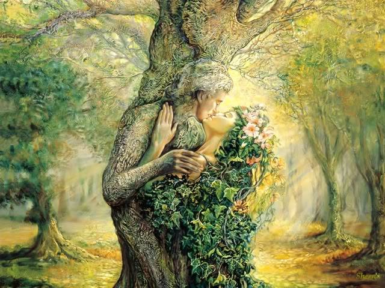

Bogovi
Slovenske bogove jako je teško klasifikovati. Njihove funkcije često se mešaju, a sama njihova priroda je neizdiferencirana. Zbog toga nije moguće slediti neku od matrica kojom se najčešće sistematizuju mitologije ostalih naroda, kao što je recimo astrološka matrica ili matrica kabalističkog Drveta života. Zato smo bogove Slovena klasifikovalina dva načina, kao one tradicionalne i kao one netradicionalne. Da bi podela bila preciznija tradicionlane smo podelili na Kijevski i Polapski panteon, kao i na bogove koji su se obožavali na drugim teritorijama. Kijevski panteon je, naravno vezan za Istočne Slovene, a polabski je bio vezan za Slovene koji su živeli između reke Odre i Labe, dok je njihova granica na severu bila Baltičko more. Polapski panteon, međutim, obuhvata mnogo širu teritoriju na kojoj su živela mnoga plemena kao što su Polabljani, Obotri i mnogi drugi. U netradicionalna božanstva spadaju pretežno božanstva slovenskog vedizma, neopaganskog pokreta koji je zasnovan na knjigama Aleksandra Asova i Jurija Miroljubova. Međutim, u netradicionalne bogove stvaili smo i one čija je tradicionalnost diskutabilna, odnosno, za koje se ne može sa sigurnošću tvrditi da su slovenskog porekla.
Kijevski panteon
U okolini Kijeva su se najviše poštovala dole navedena božanstva. Međutim ne- znači da ostala božanstva se nisu poštovala, ali u tom regionu su ovi bogovi bili najistaknutiji.
- Perun
- Dažbog
- Mokoš
- Stribog
- Simargl
- Veles
- Horz
Polapski panteon
U Polablju (okolini reke Labe) su se najviše poštovala dole navedena božanstva. Međutim ne znači da ostala božanstva se nisu poštovala, ali u tom regionu su ovi bogovi bili najistaknutiji.
- Svetovid
- Triglav
- Radgost
- Živa
- Svarožić
- Prov
- Pripegala
- Podaga
Postoji mnogo načina na koje se mogu klasifikovati božanstva slovenske mitologije. Osim klasične, geografke podele može se izvšriti i podela po tradicionalnosti, odnosno, autentičnosti slovenskih božanstava. Potreba za ovakvom podelom ukazala se nedugo posle nastanka slovensko-vedskog neopaganskog pokreta čiju su rodonačelnici Jurij Miroljubov i Aleksandar Asov. Ako uzmemo u obzir podelu po tradicionalnosti, odnosno autentičnosti, slovenske bogove možemo podeliti u tri osnovne grupe. U prvu grupu spadaju ona božanstva za koja sa sigurnošću možemo tvrditi da su deo slovenske verske tradicije tj. da su to bogovi koji su imali svoje hramove, sveštenike i poštovaoce. U ovu grupu, spadali bi, recimo, Veles, Svetovid, Radgost i ostali bogovi koje možemo nazvati tradicionalnim božanstvima. U drugu grupu spadaju bogovi čije je slovensko poreklo diskutabilno i bogovi za koje se postavlja pitanje da li su božanstva po sebi ili su njihova imena zapravo samo drugi nazivi već postojećih božanstava. Ovoj grupi mogli bi da pripadaju Horz, Devana, Zizileja (čije je ime, najverovatnije samo jedno od imena boginje Žive) itd. Poslednja, treća grupa obuhvatala bi božanstva za koja sa sigurnošću možemo tvrditi da nisu izvorno slovenska već da su preuzeta iz nekog drugog religijskog sistema. Iako imena ovih entita postoje u različitim varijacijama i u slovenskom jeziku, nemamo nikakve materijalne dokaze da su Sloveni obožavali ova božanstva. U treću grupu, dakle, spadaju božanstva slovenskog vedizma, pokreta o kome je već bilo reči u uvodnom izlaganju. Božanstva koja su na ovaj način postala deo slovenske mitologije svoje poreklo imaju u Rig vedi i ostalim svetim indijskim spisima. Krišnji, Višnji i Mater Sva samo su neki od bogova koji su svoje mesto našli u neopaganskom sistemu slovenskog vedizma. Između ostalih, tu je i Indra, koga ćemo ovom prilikom pažljivije proučiti.Za kraj smo ostavili božanstva koja se samo uzgredno spominju u izvorima o staroj slovenskoj religiji.
Perun

Jedan od najpoznatijih i najčešće pominjanih bogova u slovenskoj mitologiji jeste Perun, bog groma i munje. Po mišljenju nekih vrhovni bog, ili pak jedan od trojstva bogova pored Svaroga i Svetovida po mišljenju većine. Budući da uzrokuje vremenske nepogode predstavlja boga rušitelja. Često je prikazan kao snažan čovek duge brade i kose sa maljem u ruci, ali i sa lukom i strelama koje se dovode u vezu sa munjama. Toliko je moćan i poznat slovenski bog da ga je Ratko Petrović uneo u naslov svoje knjige „Burleska gospodina Peruna, boga groma”. Legenda govori da je Perun vozio kočije po nebu, te buka njegovih točkova predstavlja gmljavinu, a njegovi udarci maljem predstavljaju munje. Sam opis podseća na Svetog Iliju koji je kasnije po primanju hrišćanstva očigledno poprimio i karakteristike Peruna. Lingvistički ostaci odnose se na toponime i druga imena koja su se održala i do danas. I tako imamo biljku peruniku, a pored toga Perunovo ime se održalo i u pojedinim izrekama i kletvama.
Veles
Ovaj bog ima jako širok spektar funkcija, te se smatra bogom životinja, stoke, livada, šuma, useva, ali i bogom mudrosti, trgovine, bogatstva, života u širem smislu. Predstavljen je sa rogovima i pastirskim štapom. Smatralo se da Veles može da se transformiše u razne životinjske oblike, pre svega u medveda. Oduvek je bilo prisutno i rivalstvo između Peruna i Velesa. Međutim, po nekim tumačenjima slovenske mitologije, to rivalstvo nema kraja. Svakog proleća Perun pobeđuje Velesa, ali se on svake zime uporno vraća. Većina pretpostavlja da je Velesu pandan Sveti Vasilije.
Vesna
Samo ime je povezuje sa prvim znacima bujanja vegetacije, tj. sa prvim vesnicima proleća. Shodno tome, Vesna je boginja buđenja prirode, proleća. Povezivana je sa mladošću i sa mladim bračnim parovima. Prikazivana je kao lepa devojka istaknutih oblina koje simbolizuju plodnost, sa venčićima od cveća i u beloj haljini. Zbog toga što je okončavala zimu i bolesti, bila je omiljena boginja među svim Slovenima. Mnogi povezuju praznike poput Cveti i Vrbice sa ovom boginjom.
Morana

Slovenska mitologija je zanimljiva po tome što predstavlja i negativna božanstva. Nasuprot Vesni stoji boginja smrti, zime, duge gladi, bolesti, masovnih pomora, ali i utopljenih duša, vode ‒ slovenska boginja Morana. Dok su rituali posvećeni dočekivanjem Vesne, tj. proleća, bili radosni i veseli, rituali uoči dolaska zime, koju predstavlja Morana, bili su totalno drugačiji. Naime, Sloveni su pravili lutku Morane od pruća i slame, koju su zatim tukli štapovima, kidali i rastrzali, u želji da se oslobode zime, gladi i nesreće koju ona donosi. Prikazana je kao tamnokosa bleda devojka sa zastrašujućim životinjskim očima i kandžama, a ponekad je znala da uzme oblik prelepe devojke kako bi prevarila ljude.
Ostala tradicionalna božanstva
- Svarog
- Vesna
- Gerovit
- Lada
- Morana
- Triglav
- Crnobog
- Mati Sira Zemlja
- Lela
Božanstva čija tradicionalnost nije dokazana
- Belobog
- Devana
- Koledo
- Krišnji
- Kupalo
- Trajan
- Mater Sva
- Rod
- Višnji
- Voden
- Zlata Maja